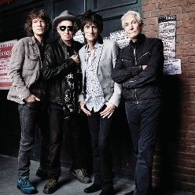
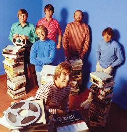
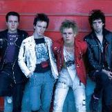
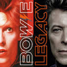
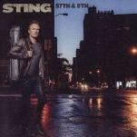
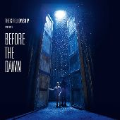

The Rolling Stones

1960s-2010s The premier British rock band for over half a century, creators of the sound and style imitated by countless groups.
Rock & Roll is often used as a generic term, but its sound is rarely predictable. From the outset, when the early rockers merged country and blues, rock has been defined by its energy, rebellion and catchy hooks, but as the genre aged, it began to shed those very characteristics, placing equal emphasis on craftmanship and pushing the boundaries of the music. As a result, everything from Chuck Berry's pounding, three-chord rockers and the sweet harmonies of the Beatles to the jarring, atonal white noise of Sonic Youth has been categorized as "rock." That's accurate -- rock & roll had a specific sound and image for only a handful of years. For most of its life, rock has been fragmented, spinning off new styles and variations every few years, from Brill Building Pop and heavy metal to dance-pop and grunge. And that's only natural for a genre that began its life as a fusion of styles.

1960s-2010s The premier British rock band for over half a century, creators of the sound and style imitated by countless groups.

1960s-2010s One of the most influential acts of the rock era, purveyors of both infectious surf music and sophisticated baroque/psychedelic pop.

1970s-1980s The most accomplished punk band, critically important provocateurs influenced by reggae, rockabilly, soul, and blues.
| Title | Performer | Stream |
|---|---|---|
| Good Vibrations | The Beach Boys | |
| Johny B.Goode | Chuck Berry | |
| Tutti Frutti | Little Richard | Stream from Spotify |

"One of the first posthumous Bowie hits collection serves up his standards. Stephen Thomas Erlewine

"For the first time in 13 years, Sting returns to pop and rock." Stephen Thomas Erlewine

The reclusive musician's return to the stage in 2014 is documented with this singular and spectacular live recording. Mark Deming